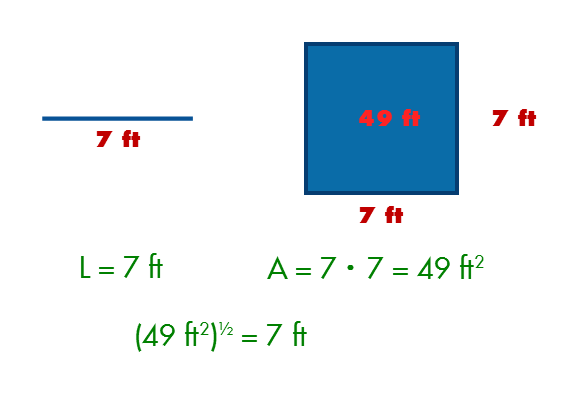

The Square Numbers
Each square number is its input multiplied by itself, or in other words, itself to the power of 2.
Square(n) = n · n OR n2
The numbers are called "squares" because if you treat the input as the length of a line, the output is the area of a square with that line length.
| Square Generator | Square Calculator |
|---|---|
| Current Position : 0 | |